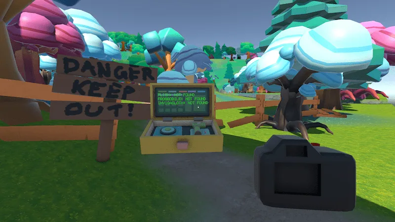

World building
Starting with our initial game concept, we developed the world through research and visual exploration.
We created moodboards and collected reference images for inspiration, using them to establish the game's visual direction, atmosphere and overall identity.
This helped us shape a world that supported our concept and provided a foundation for the environments, characters and overall experience of the game.